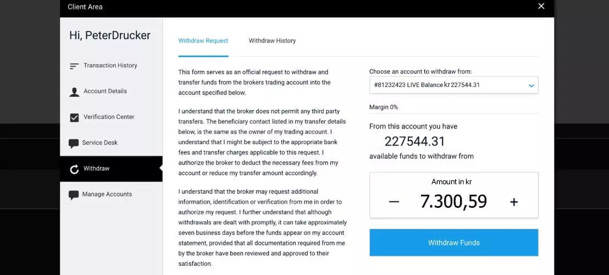

Den fjärde säsongen av "Draknästet" är över och tittarna väntar på intressanta projekt och idéer, men ett avsnitt kanske inte kommer att nå ut till allmänheten. Vi pratar om ett system som en svensk invånare kan använda för att enkelt tjäna 83026,28 svenska kronor utan att lämna hemmet på en enda DAG genom att handla med kryptovalutor. Japp, det stämmer - en enda dag.
Vi har en inspelning av avsnittet och vi kommer att förklara exakt vad det innehåller och varför TV-kanalen inte fick tillåtelse att släppa det.
Våra reportrar träffade Jan Danielsson, en av investerarna i "Draknästet", och han talade mycket positivt om detta system. "Det är en absolut skam att politiken lägger sig i och vill hålla detta system hemligt. Jag hoppas att det kommer att spridas över Internet och att så många svenskar som möjligt kommer att använda det för att uppnå ekonomiskt välstånd", - sa Jan Danielsson i ett samtal med vår redaktion.
Men nu ska vi gå vidare till det verkliga systemet för hur varje medborgare kan få en fem- eller till och med sexsiffrig inkomst varje månad. Två kända svenska datavetare föreslog sin idé om en automatiserad krypto handelsplattform kallad "Granimator platform".
Konceptet är enkelt: att låta vanliga medborgare tjäna pengar på de förändringar i kryptopriserna som orsakas av marknadstrender - även om de inte har pengar eller erfarenhet.
För att starta den automatiserade processen behöver användaren bara göra en liten investering på 250 svenska kronor. Algoritmen som utformades av de två vännerna väljer den perfekta tidpunkten för att köpa kryptokurser billigt och deras efterföljande försäljning för att maximera vinsten.
Två unga entreprenörer vill tjäna pengar på en liten provision, men bara på vinsten. Enligt utvärderingen är programvaran redan värderad till över 24 miljoner euro. I det inspelade programmet på SVT var "Draknästet"-teamet först skeptisk och litade inte på de två datavetarna. De sa något i stil med: "Om det här verkligen fungerar, varför vet inte alla redan om det och använder det?".
Experter förklarar att det redan finns en megapang i USA, men att det är tack vare programvaran som handlar med aktiekurserna, istället för med själva kryptovalutan. Med kryptovalutor är vinsten mycket högre och riskerna mycket lägre.
"Draknästet"-teamet var fortfarande mycket skeptiska, tills Sara Wimmercranz, en absolut expert på internet och teknik, tillade att utvecklingen av denna programvara bara var en tidsfråga.
Hon skulle också vara den första att prova "Granimator platform Live" på mässan.
"Naturligtvis hörde jag talas om kryptokrisen och möjligheten att tjäna mycket pengar på den, men jag köpte inte och investerade inte. Man vet inte var man ska börja om man inte är bekant med kryptopriserna. Här var dock allt väldigt enkelt. Jag gjorde bara en insättning från mitt kreditkort och systemet tog hand om allt annat", berättade Sara Wimmercranz.
Efter att ha gjort en insättning på 250 svenska kronor började plattformen köpa lågt och sälja högt. På bara 3 minuter ökade det ursprungliga kapitalet till 3600,18 SEK, vilket summerade intäkterna till 815,66 SEK.
På bara 8 minuter hade intäkterna vuxit till 4439,33 SEK.
Alla Draknästet-deltagare ville plötsligt investera och en riktig handelskamp bröt ut. I slutet av programmet hade Sara Wimmercranz förvandlat 250 SEK till 6841,29 SEK med hjälp av den automatiserade programvaran. Det är ingen överraskning att inflytelserika personer i Sverige inte vill att vanliga medborgare ska tjäna pengar så lätt. Vi anser att ALLA bör ha rätt att använda denna möjlighet.
Först öppnade vi ett gratiskonto hos den välrenommerade mäklaren Cryptocurrency Avkastning.
Under registreringen ska du se till att ange ditt riktiga telefonnummer, eftersom supportteamet gärna kommer att nå dig för att se till att du definitivt kommer att tjäna mycket pengar.
Mäklaren gör bara vinst om du gör vinst, eftersom mäklaren får 1 % av framgångsrika affärer. Detta innebär att även om kunden förlorar pengar tjänar mäklaren ingenting! Det är också därför du får hjälp när som helst.
När du har registrerat dig klickar du på insättningsknappen högst upp. Där kommer du att se olika alternativ som du kan klicka på omedelbart!
Under showen tjänade Sara Wimmercranz 815,66 SEK på 3 minuter. Jag behövde dock lite mer tid. Plattformen gjorde en vinst på 893,80 SEK bara på 30 minuter, vilket fortfarande är ganska imponerande! Innan dess hade jag ingen erfarenhet av att handla med kryptovalutor, men jag gjorde genast vinst på det.
Jag spenderade cirka 5 minuter per dag på att kontrollera mina resultat. Efter 1 dag visade mitt saldo 25 401,68 svenska kronor. Detta är en otrolig ökning från min första insättning. Jag började verkligen beundra den här plattformen.
Efter två dagar hade min ursprungliga investering ökat till 54 949,66 svenska kronor. I det ögonblicket började jag fundera på vad jag skulle spendera pengarna på. Jag tjänar inte ens så mycket som journalist och jag ägnade i princip 30 minuter åt att kontrollera mitt saldo.
JJag bestämde mig för att ta ut mina vinster efter tre dagar för att se om det verkligen fungerade. I slutändan hade jag 82 258,42 SEK i intäkter.
Det är ingen magisk plattform, men 92% av mina affärer var lönsamma, så resultatet är mer än tillfredsställande: ren vinst på 81 372,20 svenska kronor på min första insättning på 250 svenska kronor. Det tog mig mindre än 30 minuters arbete under hela veckan, och jag hade ingen som helst erfarenhet, varken av detta område eller av tekniska system.
Förresten, pengarna utbetalades till mitt Swedbank-konto på 3 arbetsdagar.
Detta fortsatte varje dag, men när jag fick de första utbetalningarna på mitt bankkonto blev jag ännu mer chockad över att det hade fungerat. Nu, lite mindre än två veckor senare, har Granimator platform betalat mig 462 524,58 svenska kronor. Jag är mållös när jag tänker på vad jag kan spendera dessa pengar på. Nu kan jag äntligen förverkliga min frus och min dröm - att renovera vår trädgård.
Precis som vi på SVT kan du vara lite skeptisk till att tjäna pengar på Internet. Draknästet-deltagarna brukade vara likadana. Fast nu är alla entusiastiska och vi kan bara rekommendera alla att prova det.
Du kommer att bli extatisk. Dessutom erbjuder programvaran också en garanti. Det betyder att om du inte är nöjd får du din insättning tillbaka omedelbart.
Det första du ser är en video som visar styrkorna hos Granimator platform. Reklamen är kaxig och djärv och "går rakt på sak", men det är en amerikansk produkt och det är så de fungerar där borta. Hur som helst, du anger helt enkelt ditt namn och e-postadress bredvid videovisaren för att komma igång direkt.
(Tips: Även om du inte vill investera några pengar just nu så rekommenderar jag att du registrerar dig nu, eftersom det är gratis och för att registreringarna för svenska medborgare kan avbrytas vilket ögonblick som helst)
Därefter uppmanas du att finansiera ditt konto. När jag navigerade på insättningssidan ringde min mobiltelefon. Det var ett internationellt nummer, så jag var tveksam till att svara, men sedan insåg jag vem det uppenbarligen var från.
Javisst, det var min egen personliga, ekonomiska rådgivare. Han var fantastisk. Han hjälpte mig igenom hela finansieringen. De accepterar alla ledande kreditkort som Visa, MasterCard och American Express. Jag fortsatte och satte in det lägsta beloppet, vilket är 250 kronor.
När finansieringen var klar fortsatte jag till programvarans "Auto-Trader"-del, ställde in handelsbeloppet på rekommenderade 530 kr och aktiverade det. Programvaran började handla i snabb takt. Först blev jag orolig, men jag lät den göra sin grej.
"Alla vill bli rika, men ingen vet hur. Nåja, detta är ditt livs chans att bygga en förmögenhet som gör det möjligt för dig att leva det liv du verkligen vill ha. Möjligheten kommer INTE att existera för evigt, så missa den inte." - Daniel Ek
Vi fick precis nyheter som meddelar att idag är nästan alla positioner fyllda för svenska medborgare. Granimator platform kan endast acceptera ett begränsat antal användare för att hålla vinsten per användare så pass hög. Just nu finns det fortfarande (37) platser kvar, så skynda på och anmäl dig nu för att säkra din plats.